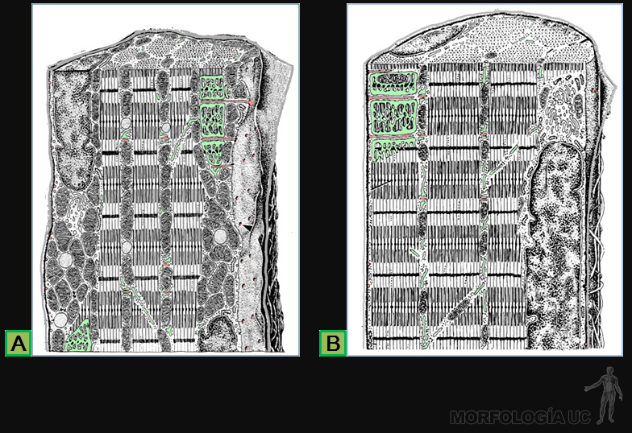

Fig. 3-79: MO de tejido muscular en corte por lengua, tinción HE.
fibras musculares esqueléticas en A;
tejido conjuntivo en B;
fascículo nervioso en FN;
vaso sanguíneo en VS.
Fig. 3-80: MO de cortes longitudinales por tejidos musculares, tinción HE, junto a dibujos de la forma de cada célula muscular.
A) esquelético;
B) cardíaco;
C) liso.
Fig. 3-81: MO de cortes por musculo esquelético, tinción HE.
A) corte transversal por las fibras musculares;
B) corte longitudinal por las fibras musculares, y en;
C) tinción de color negro para las fibras nerviosas y las uniones neuromusculares.
Fig. 3-82:
A y B) dibujos de tejidos conjuntivos que rodean al músculo esquelético, desde su inserción en el tendón hasta cada fibra individual;
C) MO de un corte teñido en negro para fibras reticulares, las que se insertan en el conjuntivo del perimisio;
D) dibujo que muestra la ubicación de los costámeros en cada fibra muscular.
Fig. 3-83: Fibras musculares esqueléticas en cortes longitudinales.
A) MO de fibras teñidos con HE;
B) MET de un corte a través de una fibra muscular, y en;
C) MLP de fibra muscular en la que destacan sus estriaciones.
Fig. 3-84: Disección de los triángulos carotideo y digástrico o submaxilar que muestra la disposición de los nodos linfáticos.
A) MET en que se observa de la estructura del sarcómero en tres miofibrillas adyacentes;
B) esquema de q la disposición de los miofilamentos finos y gruesos que generan la estriaciones en cada fibra muscular;
C) Dibujo de la distribución, en el sarcómero de las moléculas relacionadas con su capacidad de contracción.
Fig. 3-85:
A) MET de sarcómeros de miofibrillas relajadas y contraídas;
B) esquema en que se compara la disposición de los miofilamentos en el sarcómero relajado y contraído.
Fig. 3-86: Esquema de la estructura de las principales moléculas que forman los miofilamentos.
A) en el filamento fino;
B) en el filamento grueso.
Fig. 3-87: Esquemas de los desplazamientos moleculares que permiten el acortamiento del sarcómeros.
A) secuencia de etapas que ilustra los cambios en la forma de la miosina en su desplazamiento a lo largo de la F-actina;
B) se muestra como los cambio en el nivel de calcio del sarcoplasma modifica la en la posición de la tropomiosina en la F-actina.
Fig. 3-88: Disección de los triángulos carotideo y digástrico o submaxilar que muestra la disposición de los nodos linfáticos.
A) esquema de la estructura del retículo sarcoplásmico (verde) y su asociación con el túbulo T (rosado) y con la miofibrilla;
B) MET de la asociación entre el túbulo T y membrana del retículo sarcoplásmico;
C) esquema del efecto de la despolarización de del túbulo T sobre su proteína sensible a voltaje (roja), que afecta al canal del calcio del retículo sarcoplásmico (verde).

Fig. 3-89: Dibujos de la estructura de dos tipos de fibra muscular esquelética.
A) fibra roja, (tipo I: oxidativas lentas);
B) fibra blanca (tipo IIB: glucolíticas rápidas).
Fig. 3-90:
A) MO de fibras musculares, en corte longitudinal, con una tinción de color negro para los axones motores;
B) esquema de la unión neuromuscular en la placa motora, (terminal axónico=celeste);
C) dibujo de dos formas de unidad motora.
Fig. 3-91: Esquema de huso neuromuscular, que muestra: la cápsula conjuntiva, las fibras musculares intrafusales, y las terminaciones nerviosas sensoriales intrafusales (azules) y motoras (rojas) intrafusales y extrafusales.
B) dibujo de un corte por una célula muscular, tal como se ve al MET;
C) dibujo de la disposición del retículo sarcoplásmico (verde), túbulos T (rosado) y miofibrillas (rosado) tal como se ve al MET.
Fig. 3-93: Estructura de los discos intercalares.
A) MO. de corte longitudinal por fibras musculares teñido con HE;
B) MEB de la forma de la superficie de la fibra muscular en el disco intercalar;
C) esquema de estructura y ubicación de las uniones intercelulares en el disco intercalar.
Fig. 3-94: Estructura de las fibras musculares lisas.
A) MO en corte longitudinal tinción HE;
B) MET. de cortes longitudinales por su citoplasma;
C) MO. de corte longitudinal y transversal por musculatura del intestino delgado, tinción HE.
Fig. 3-95:
A) MET de células musculares lisas en corte longitudinal, las flechas verdes indican el endomisio que las rodea;
B) MO de cortes transversales en que destacan los límites intercelulares, teñidos con PAS (flecha verde), en;
C) MET de cortes transversales en que la lámina basal y las fibras reticulares se ven de color negro (flecha verde).
Fig. 3-96:
A) MET zona vecina la membrana celular de la célula, rica en: filamentos finos y gruesos, cávelas adyacente a la superficie celular, y las flechas naranjas indican cuerpos densos y placas de adhesión;
B) dibujo de la disposición de la miosina en los filamentos gruesos y su interacción con los filamentos finos;
C) esquema de la unidad contráctil de una fibra muscular lisa.
Fig. 3-97: Inervación del músculo liso.
A) MO de musculo liso de la vejiga con tinción histoquímica color café para fibras nerviosas colinérgicas;
B) esquema de la organización del musculo liso: unitario (izquierda) y multiunitario (derecha).